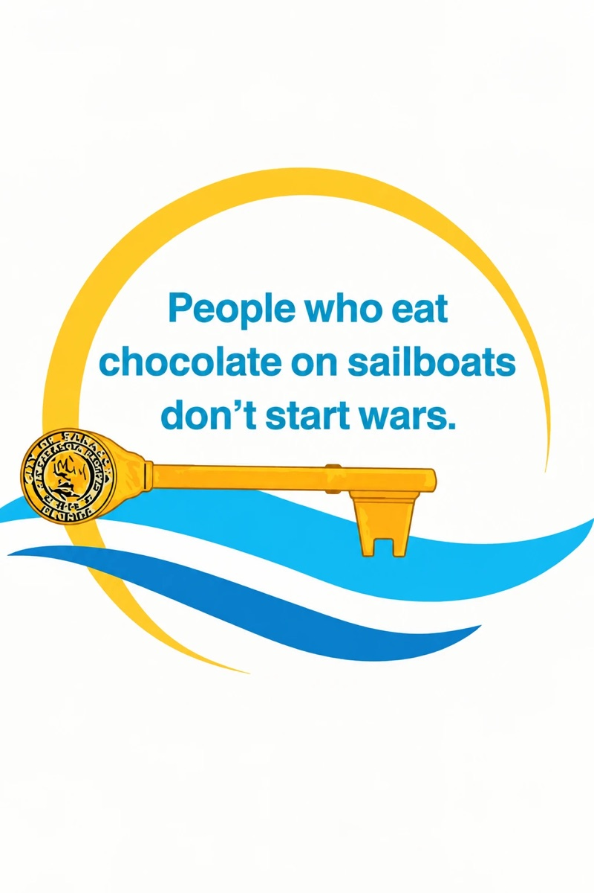

Sailing Home Sarasota
A STORY WAITING TO BE TOLD!
Share the incredible story of Jan Hamel Solomon… A little girl’s riveting journey from the sandy white beaches of Sarasota to the far reaches of planet earth. Follow her home as she shares God’s love with our world and with you!
To book Jan for a speaking engagement or receive a copy of her book, click here!
“Once upon a time they all lived happily ever after” makes a short read, even for my bright-eyed grandchildren. The best books have a lot of “Really Scary Stuff” in the middle. Using this as the criteria, you might just find the following to be a “Truly Good Book.” I hope it makes you want to laugh, cry, and live long enough to tell your own story.